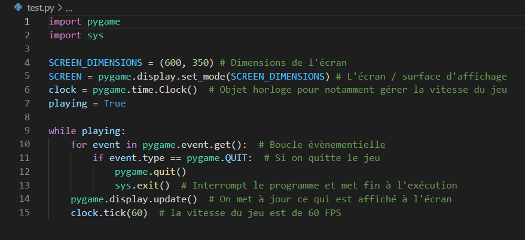
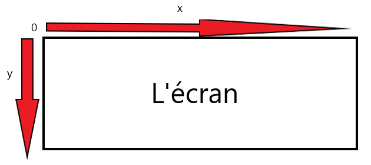
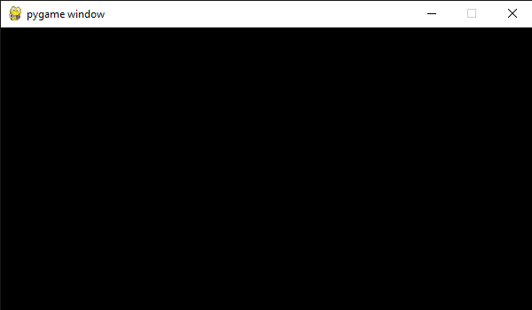

Structure Elémentaire
Ces quelques lignes que vous voyez çi-dessus constitueront la plupart de vos projets Pygame. Et c'est sur cette page que nous expliquerons l'utilité de ces instructions, ce qui nous amènera ensuite à discuter du fonctionnement de pygame. Toutefois, si vous avez suivi et compris ce qui a été dit à la page précèdente, quelque chose devrait vous choquer dans le code çi-dessus. Qu'est-ce donc à votre avis ? Nous connaissons la réponse : Pygame a été importé mais jamais initialisé ! D'où l'importance de la fonction init(). Pour éviter de futur bugs, il faut écrire pygame.init() juste après avoir importé les modules nécessaires au projet.
L'écran
L'écran est créé grâce à ligne de code suivante : screen = pygame.display.set_mode(SCREEN_DIMENSIONS) Içi, nous venons d'accéder au sous-module display qui contient tous les outils pour gérer l'écran. L'écran est le panneau d'affichage du jeu. On y fera apparaître des images. Il faut noter que SCREEN_DIMENSIONS doit être remplacé par les dimensions de votre choix pour l'écran, le choix du nom de la variable est également libre mais celle-ci est communément appelée écran ou screen si vous aimez l'anglais. Une fonctionnalité très pratique de l'écran est de pouvoir se repérer dans celui-ci grâce à des coordonnées x et y.
Que remarquons-nous d'atypique sur ce schéma ? Jettons donc un coup d'oeil à l'axe des ordonnées. Dans la plupart des graphes courants, plus on monte, plus y augmente. Alors que plus on descend dans le graphe, plus y diminue. C'est exactement le contraire pour l'écran de Pygame. Il faut interpréter celui-ci comme un océan. Quand on descend, la profondeur augmente ! Ainsi le maximum de la coordonnée y est situé tout en bas de l'écran, et le minimum tout en haut.
Il existe plusieurs méthodes associées à l'écran, par exemple, pygame.display.set_caption(Titre) permet de définir le titre du jeu, le nom de la fenêtre qui sera affiché en haut à gauche, en prenant comme argument une chaîne de caractères qui correspond au titre que l'on souhaitera afficher. Sinon, est également disponible pygame.display.set_icon(surface) pour définir l'icône du jeu mais encore plus important : la méthode variable_ecran.blit(surface, position). "BLIT" signifie BLock Image Transfer et comme son nom l'indique, cette méthode permet de transférer une image à une position souhaitée sur la variable_ecran associée. On reviendra à cette méthode plus tard, après avoir discuté des surfaces.
Les boucles importantes du jeu
La boucle while playing permet au jeu de tourner en boucle. C'est là qu'on va inclure les instructions définissant le jeu. Cette boucle contient elle-même une autre boucle : la boucle évènementielle. Elle est définie par la ligne de code : for event in pygame.event.get(), qui a pour but de détecter certaines entrées de l'utilisateur et d'agir en conséquence. Par exemple, cette boucle peut détecter si le joueur a cliqué sur la souris, pressé la barre espace, ou si un certain laps de temps s'est écoulé. L'évènement (ou entrée) le plus commun est pygame.QUIT qui correspond à l'action de fermer la fenêtre du jeu.A la fin de la boucle principale
A la fin de chaque itération, on met généralement à jour ce qui est affiché à l'écran avec l'instruction : pygame.display.update(). Après cette ligne, on gère la vitesse du jeu avec la méthode variable_clock.tick(vitesse_en_FPS) grâce à l'objet Clock créé auparavant, 'vitesse_en_FPS' doit bien sûr être remplacé par la vitesse en FPS du jeu. Conventionnellement, celle-ci vaudra 60 FPS pour la plupart de nos jeux pygame. Mais pour les jeux les plus "retros", elle vaudra plus ou moins dans les 20-40 FPS. Mais je vous encourage à vous amuser et à tester toutes les vitesses possibles !
Conclusion
Ainsi, si nous exécutons le code çi-dessus (sans oublier pygame.init()), nous devrions obtenir le résultat suivant :
Et voilà ! Nous venons tout juste de créer notre toute première fenêtre Pygame ! Il reste cependant un problème, notre fenêtre n'a rien à afficher mis à part un écran noir. Nous allons immédiatement remédier à cela dans la prochaine partie.